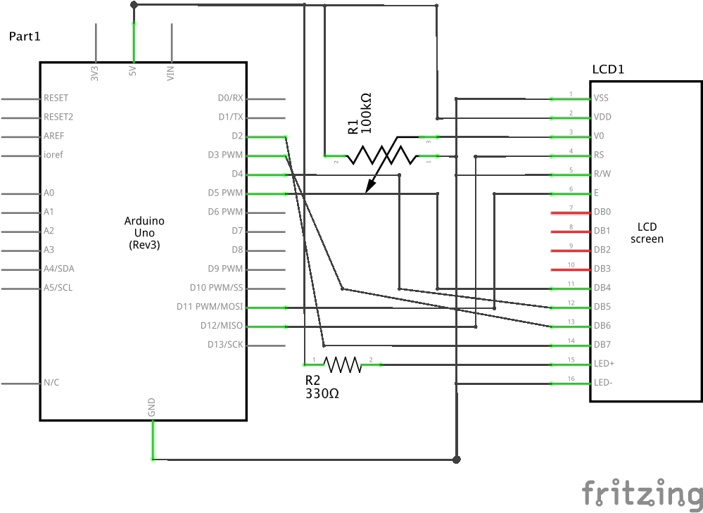
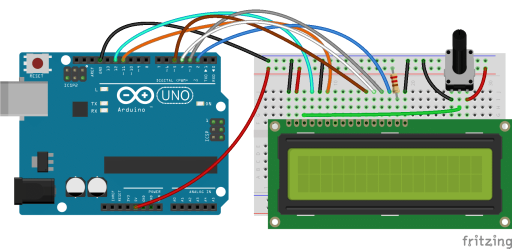
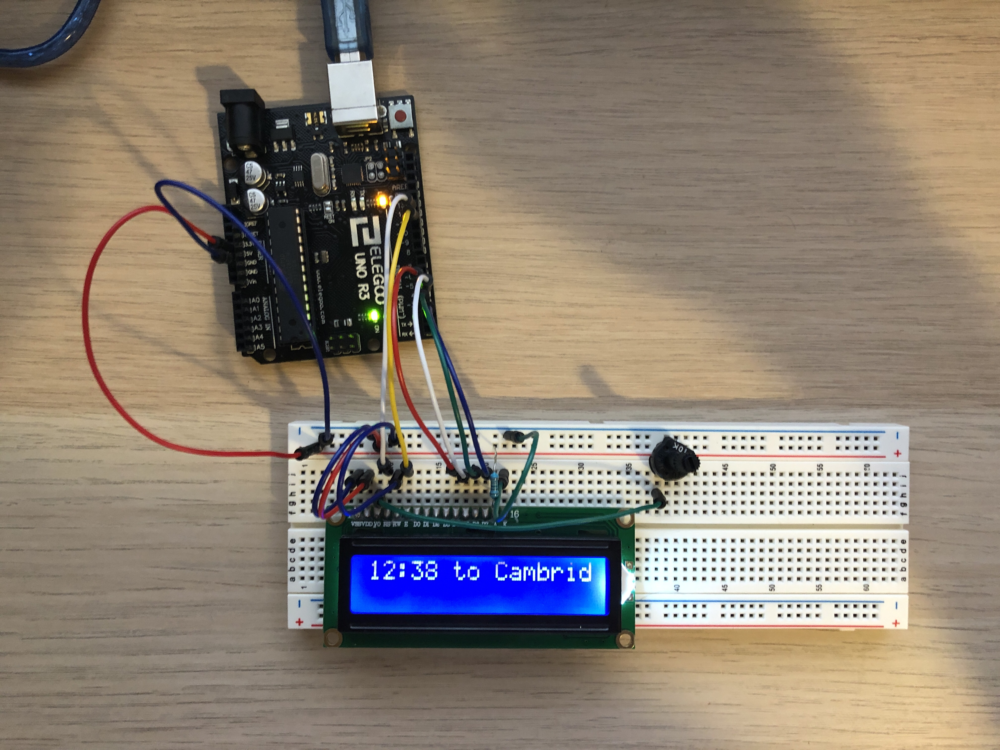

For my final project, I created an LCD screen that displays information for the train that is departing the soonest from London King's Cross Station. Using an API, the LCD displays the train's aimed departure time, destination, and platform.
To demonstrate that the API is indeed working, the above video first shows the train departing from London Waterloo Station and then the train from King's Cross.

 
This technical underpinning of this project is using Python to retrieve data from the Transport API and create an understandable sentence out of that information. The information is then sent to the serial monitor. Finally, the Arduino reads the serial monitor for the train information and prints it to the LCD screen.
import urllib, json, requests, serial, time # import various libraries to be used
portName = '/dev/cu.usbmodem14201' # set port name to usb Arduino is plugged into
ser = serial.Serial(portName, 9600) # create Serial object
time.sleep(2) # delay running of program by 2 seconds due to Arduino reset
# a function to display a JSON result in a readable manner, only to understand API in initial stages
def pretty(obj):
return json.dumps(obj, sort_keys=True, indent=2)
# a function to get an HTTP request and throw an error if a response was not received
def safeGet(url):
try:
return urllib.request.urlopen(url)
except urllib.error.HTTPError as e:
print("The server couldn't fulfill the request.")
print("Error code: ", e.code)
except urllib.error.URLError as e:
print("We failed to reach a server")
print("Reason: ", e.reason)
return None
# a function to pull departure time, destination name, and platform information for the train leaving king's cross at the soonest
def getInfo():
# create a JSON object from the http result. URL is pulling live timetable for London King's Cross Station
result = safeGet('https://transportapi.com/v3/uk/train/station/KGX/timetable.json?app_id=hidden&app_key=hidden&train_status=passenger')
jsonresult = result.read() # read the JSON result
data = json.loads(jsonresult) # load the JSON result
# print(pretty(data['departures']['all'][0]['aimed_departure_time']))
train = data['departures']['all'][0] # pull data about the first train in the json object
time = train['aimed_departure_time'] # store aimed departure time for that train
destination = train['destination_name'] # store destination name for that train
platform = train['platform'] # store platform number for that train
msg = time + ' to ' + destination + ' is on platform ' + platform + '\n' # create a sentence from the train info
# a function that prints whether the serial is open (debugging purposes)
if ser.isOpen():
print(ser.name + ' is open...')
print(msg)
ser.write(msg.encode('utf-8')) # write the sentence of train info to the serial monitor as bytes
getInfo() # run the function
#include <LiquidCrystal.h> // include LCD library
String trainIn = ""; // create empty string that will later be filled with train info read from serial monitor
LiquidCrystal lcd(12, 11, 5, 4, 3, 2); // initialize LCD at pins 12, 11, 5, 4, 3, 2
// initialize serial communications and LCD
void setup() {
Serial.begin(9600); // begin serial communications at 9600 bps
lcd.begin(16, 2); // turn on LCD
}
// this function will loop forever
void loop() {
if (Serial.available() > 0) { // if the serial monitor is on
trainIn = Serial.readString(); // read the strings in the serial monitor
// Serial.println(trainIn); // print the train info that has been read (debugging purposes)
lcd.setCursor(0,0); // set cursor to top left of LCD
lcd.print(trainIn); // print train info to LCD
while (true) { // loop forever
lcd.scrollDisplayLeft(); // scroll LCD to see full text
delay(250); // scroll speed
}
}
}